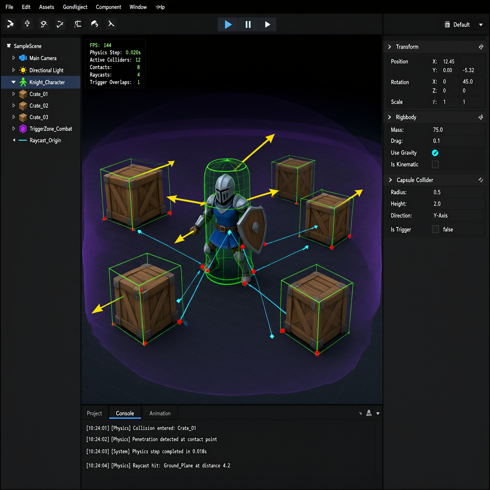

Физика Bolt
Bolt считает твёрдые тела фиксированными шагами (по умолчанию 120 Гц), независимо от частоты рендера.
Тело и коллайдер
scripts/body.lualua
local id = screw.spawn("Ball")
screw.add(id, "Transform", { position = vec3(0, 6, 0) })
screw.add(id, "Collider", { shape = "sphere", radius = 0.5 })
screw.add(id, "RigidBody", {
mass = 2.0,
restitution = 0.78, -- упругость отскока
friction = 0.4,
ccd = true, -- непрерывное обнаружение столкновений
})События столкновений
scripts/on_hit.lualua
screw.on("collision_begin", function(a, b, contact)
if screw.has_tag(a, "player") and screw.has_tag(b, "destructible") then
screw.despawn(b)
screw.audio.play("sfx/crate_break.scw", contact.point)
end
end)Raycast и триггеры
scripts/raycast.lualua
local hit = screw.physics.raycast(origin, direction, 50.0)
if hit then
print("попали в", hit.entity, "на дистанции", hit.distance)
end
-- триггер: зона без физического отклика
screw.add(zone, "Collider", { shape = "box", size = vec3(4, 3, 4), is_trigger = true })Отладочный оверлей

screw physics debug on: зелёные коллайдеры, красные точки контакта, голубые лучи, фиолетовые триггеры.Частая ошибка
Не двигайте тело через Transform.position каждый кадр — используйте RigidBody.velocity или move_to, иначе сломается интерполяция и CCD.